스틸 이미지
AI로 생성한 컨셉 이미지, 캐릭터 아트, 세계관 비주얼 아카이브.
11 이미지 · 11 Images

삼국워(EASTWAR) 티저 포스터01
2026년 05월 25일EASTWAR 영웅 캐릭터 · Character Art

이순신
Yi Sun-sin 조선 수군 통사령관 · JOSEON NAVY임진왜란에서 단 한 번도 패배하지 않은 불패의 전략가. 거북선을 이끌고 수전을 지배한 이 게임의 핵심 영웅. 동아시아를 통일하는 자리에 그의 이름이 가장 먼저 오른다.
Korea's undefeated naval strategist. Never lost a single battle during the Imjin War. The central hero of EASTWAR — commanding the seas with the Turtle Ship, his dominion over water makes him the most dangerous force on any map.

관우
Guan Yu 촉한 오호대장 · GENERAL OF THE FIVE TIGERS의(義)의 화신. 삼국지 최강의 무장으로 불리며 전장에서 적을 압도하는 존재. EASTWAR에서 중원을 대표하는 핵심 전력.
The embodiment of loyalty and righteousness. Feared across the Three Kingdoms as the mightiest warrior of his era. In EASTWAR, he stands as the supreme force of the Central Plains.

장비
Zhang Fei 연인(燕人) 장익덕 · ZHANG YIDE OF YAN천둥 같은 목소리로 적진을 무너뜨린 맹장. 전장에서 가장 먼저 돌격하는 용맹의 상징. 그의 함성 하나가 전세를 바꾼다.
The ferocious general whose war cry shook enemy lines. First to charge, last to retreat. In EASTWAR, his raw power on the battlefield turns the tide of any engagement.

오다 노부나가
Oda Nobunaga 천하포무(天下布武) · LORD OF THE JAPANESE ARCHIPELAGO철포 부대와 냉철한 전략으로 일본 열도를 장악한 지배자. 두려움 없는 혁신가. EASTWAR에서 일본을 대표하는 최강의 군주.
The iron-willed conqueror who unified Japan through gunpowder and ruthless strategy. A fearless innovator centuries ahead of his time. In EASTWAR, he commands the full might of the Japanese archipelago.

정도전
Jeong Do-jeon 조선 개국 공신 · ARCHITECT OF JOSEON조선을 설계한 최고의 책사. 칼보다 붓이 강하다는 것을 증명한 전략의 화신. EASTWAR에서 한반도의 두뇌로 활약한다.
The master strategist who designed the Joseon dynasty from the ground up. Proof that the pen outweighs the sword. In EASTWAR, he serves as the supreme intellect of the Korean Peninsula.
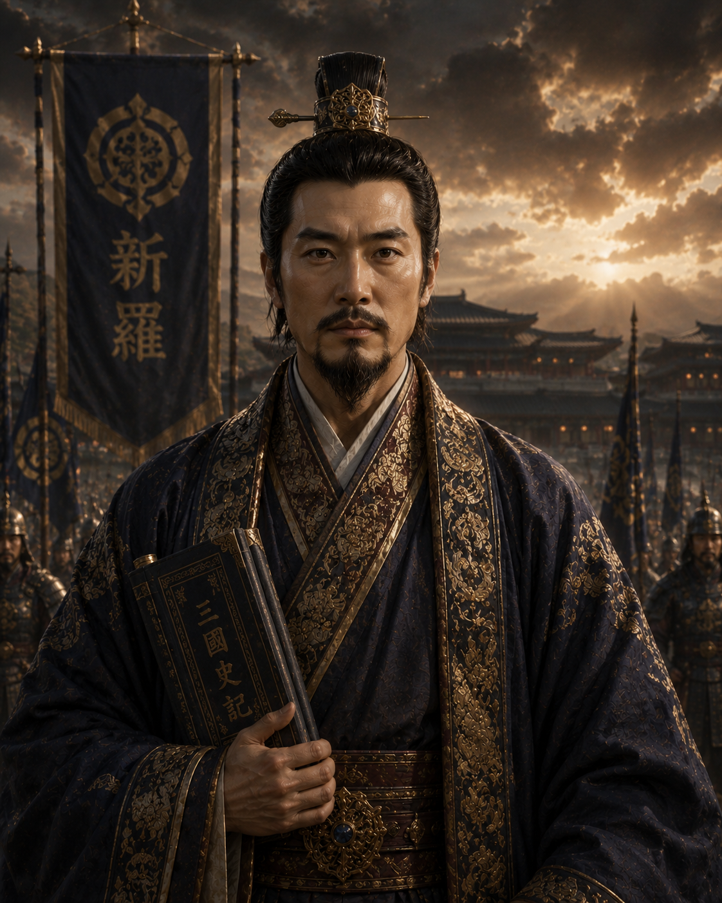
김춘추
Kim Chun-chu 신라 외교가 왕 · SILLA DIPLOMAT-KING신라의 운명을 외교로 바꾼 왕. 당나라와 손잡아 삼국통일의 첫 단추를 끼운 전략가다. EASTWAR에서는 무력이 아닌 지략과 외교로 판을 뒤집는 신라의 두뇌로 등장한다.
The king who rewrote Silla's fate through diplomacy. He forged the alliance with Tang China that set the Three Kingdoms unification in motion. In EASTWAR, he's Silla's mastermind — turning the tide not with the sword, but with strategy and statecraft.
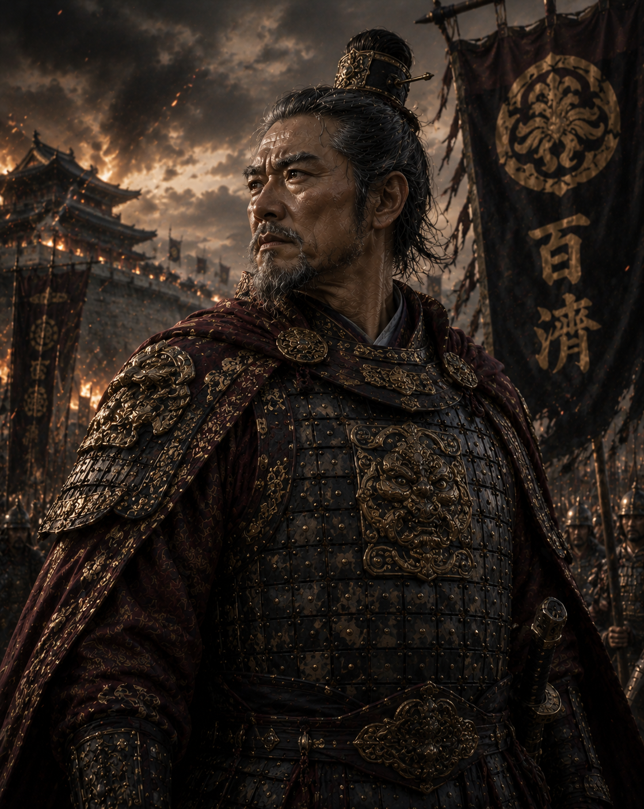
계백
Gyebaek 백제 결사대 · 황산벌 · BAEKJE LAST STAND황산벌에서 5천 결사대를 이끌고 신라 대군에 맞선 백제 최후의 명장. 패배가 뻔한 싸움에도 물러서지 않은 그의 각오는 백제 몰락의 마지막 순간을 상징한다. EASTWAR에서는 백제의 방어선을 지키는 최강의 수성 장수다.
Baekje's last great general, who led 5,000 death-defying troops against Silla's overwhelming army at Hwangsanbeol. His refusal to retreat, even in a battle he knew was lost, marks the final stand of a falling kingdom. In EASTWAR, he's Baekje's ultimate defensive powerhouse.
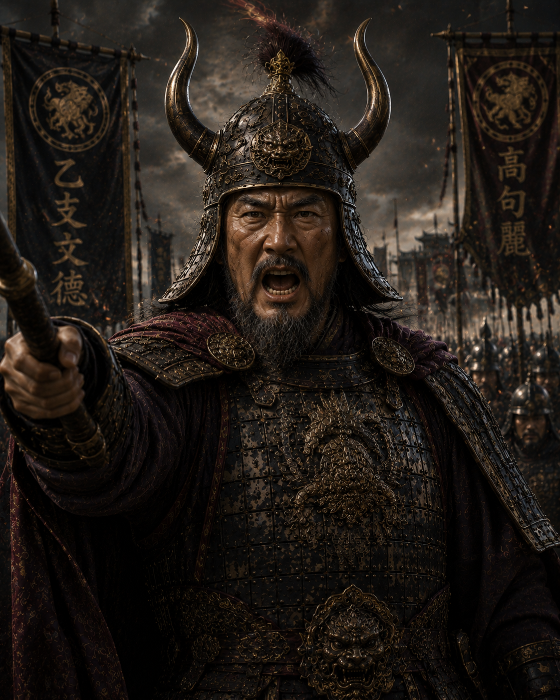
을지문덕
Eulji Mundeok 고구려 명장 · 살수대첩 · GOGURYEO GENERAL수나라 130만 대군을 살수에서 궤멸시킨 고구려 최고의 명장. 유인책과 지형을 활용한 그의 전술은 동아시아 전쟁사에 길이 남을 대승으로 기록됐다. EASTWAR에서는 고구려의 공세를 이끄는 파괴력 있는 야전 지휘관이다.
Goguryeo's greatest commander, who annihilated a Sui army of 1.3 million at the Battle of Salsu. His use of deception and terrain produced one of the most decisive victories in East Asian military history. In EASTWAR, he leads Goguryeo's offense as a devastating field commander.
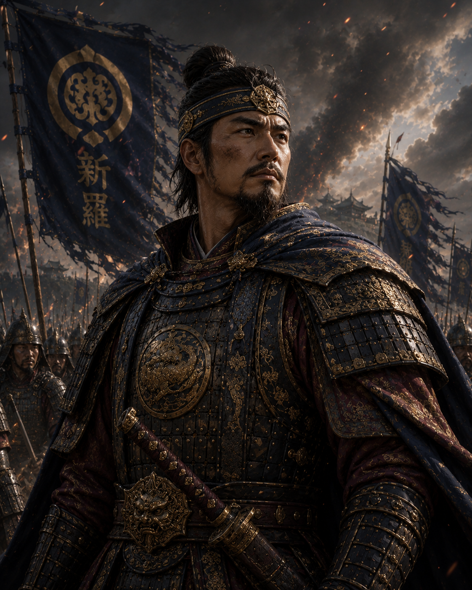
김유신
Kim Yu-sin 신라 대장군 · 삼국통일 · SILLA GRAND GENERAL신라의 삼국통일을 현실로 만든 대장군. 화랑 출신으로 평생을 전장에서 보내며 백제와 고구려를 차례로 무너뜨렸다. EASTWAR에서는 신라 군세의 중심에 서는 만능형 야전 지휘관으로 활약한다.
The grand general who turned Silla's dream of unification into reality. A former Hwarang warrior, he spent his life on the battlefield, bringing down Baekje and then Goguryeo in turn. In EASTWAR, he stands at the core of Silla's army as an all-around field commander.

곽재우
Gwak Jae-woo 조선 의병장 · 홍의장군 · JOSEON MILITIA LEADER붉은 옷을 입고 싸워 '홍의장군'이라 불린 조선 최초의 의병장. 정규군이 무너진 자리에서 백성들을 모아 왜군에 맞선 저항의 상징이다. EASTWAR에서는 민심을 등에 업고 기습전을 주도하는 게릴라형 장수다.
Known as the "Crimson Robe General" for the red armor he wore into battle, he was Joseon's first militia commander during the Imjin War. When the regular army collapsed, he rallied ordinary people into a symbol of resistance. In EASTWAR, he's a guerrilla-style commander who fights with the people's backing.
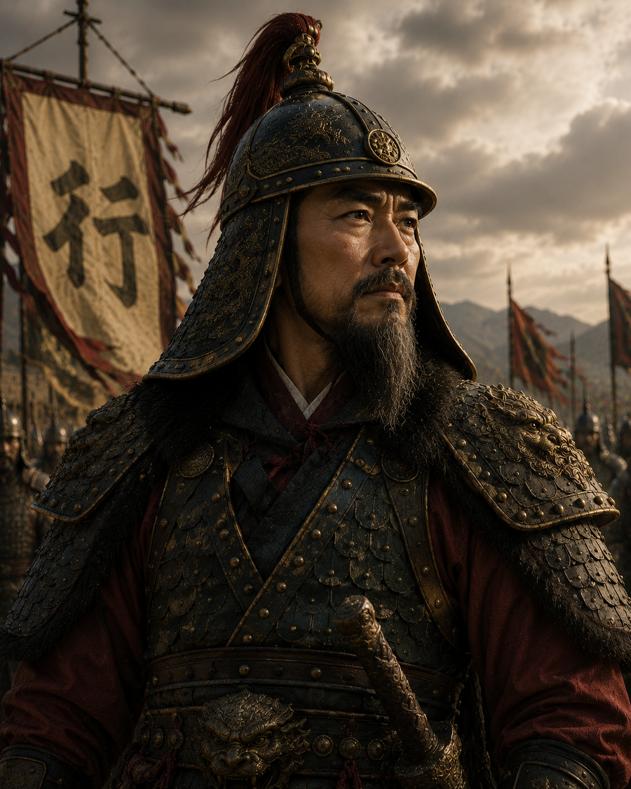
권율
Kwon Yul 조선 도원수 · 행주대첩 · JOSEON SUPREME COMMANDER행주산성에서 소수 병력으로 왜군 대군을 격퇴한 임진왜란 3대 대첩의 주인공. 여성과 백성까지 힘을 보탠 행주대첩은 조선 반격의 전환점이 됐다. EASTWAR에서는 방어전에서 압도적인 존재감을 발휘하는 수성 특화 장수다.
The hero of the Battle of Haengju, where a vastly outnumbered Joseon force repelled a massive Japanese army — one of the three great victories of the Imjin War. With even women and civilians joining the fight, Haengju became the turning point of Joseon's counteroffensive. In EASTWAR, he's a defense specialist who dominates siege battles.

김덕령
Kim Deok-ryeong 조선 의병장 · 충장공 · JOSEON MILITIA GENERAL임진왜란 당시 백성들을 이끌고 왜군에 맞선 조선의 의병장. 뛰어난 무예와 용맹으로 이름을 떨쳤지만 모함으로 억울하게 생을 마감한 비극의 영웅이다. EASTWAR에서는 압도적인 개인 무력으로 전황을 뒤집는 돌격형 장수로 등장한다.
A Joseon militia leader who rallied common people against the Japanese invasion during the Imjin War. Renowned for his martial prowess and courage, he met a tragic end after being falsely accused. In EASTWAR, he's a frontline assault hero who can single-handedly turn the tide of battle.
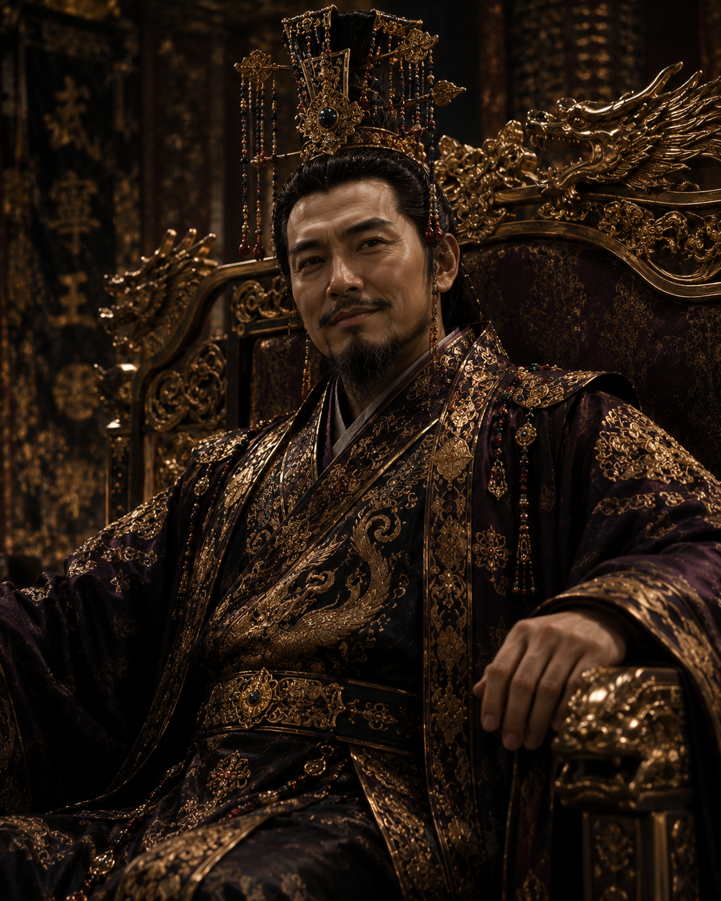
의자왕
Uija-wang 백제 마지막 왕 · LAST KING OF BAEKJE백제의 마지막 왕. 즉위 초 신라를 몰아붙이며 전성기를 이끌었지만, 결국 나당연합군에게 왕조의 종말을 맞이했다. EASTWAR에서는 백제의 흥망을 동시에 짊어진 상징적인 군주로 등장한다.
The final king of Baekje. Early in his reign he pushed Silla to the brink, leading the kingdom through its last golden age — before ultimately watching it fall to the combined forces of Silla and Tang. In EASTWAR, he represents both the rise and the fall of Baekje in a single figure.
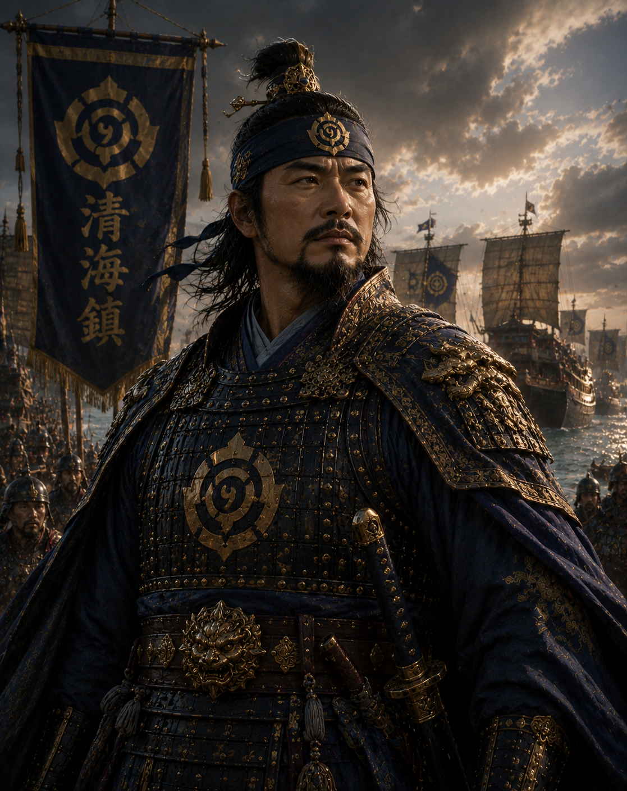
장보고
Jang Bogo 신라 해상왕 · 청해진 · SILLA MARITIME LORD청해진을 세우고 동아시아 바다를 지배한 신라의 해상왕. 해적을 소탕하고 신라·당·일본을 잇는 해상 무역로를 장악한 그는 바다를 통해 국경을 넘나든 인물이다. EASTWAR에서는 강력한 수군력으로 해상 전투를 지배하는 장수다.
The maritime king who founded Cheonghaejin and dominated the seas of East Asia. He cleared the waters of pirates and controlled the trade routes linking Silla, Tang, and Japan — a man who crossed borders through the ocean itself. In EASTWAR, he commands the seas with a powerful navy of his own.
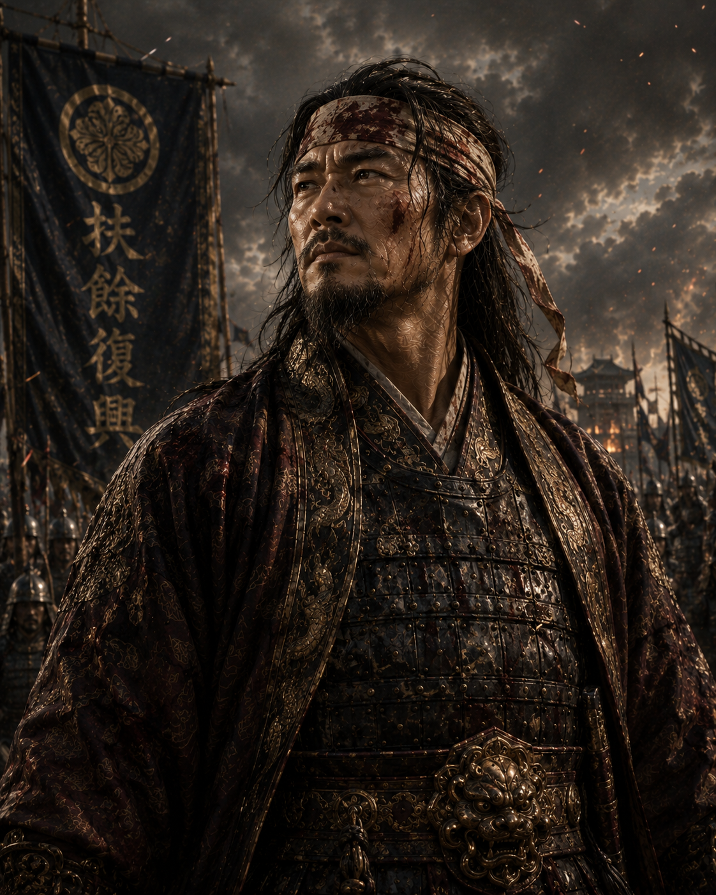
흑치상지
Heukchi Sangji 백제 부흥군 · BAEKJE REVIVALIST GENERAL백제 멸망 후 부흥운동을 이끌며 다시 일어선 저항의 장수. 이후 당나라로 건너가 이민족 출신으로는 드물게 명장의 반열에 오른 파란만장한 인생을 살았다. EASTWAR에서는 백제 재건의 마지막 희망을 짊어진 부흥군의 지휘관이다.
A resistance general who rose again to lead the Baekje restoration movement after the kingdom's fall. He later crossed into Tang China, where — remarkably for a foreign-born commander — he rose to the rank of great general in a turbulent, storied life. In EASTWAR, he leads the restoration army as Baekje's last hope for rebirth.
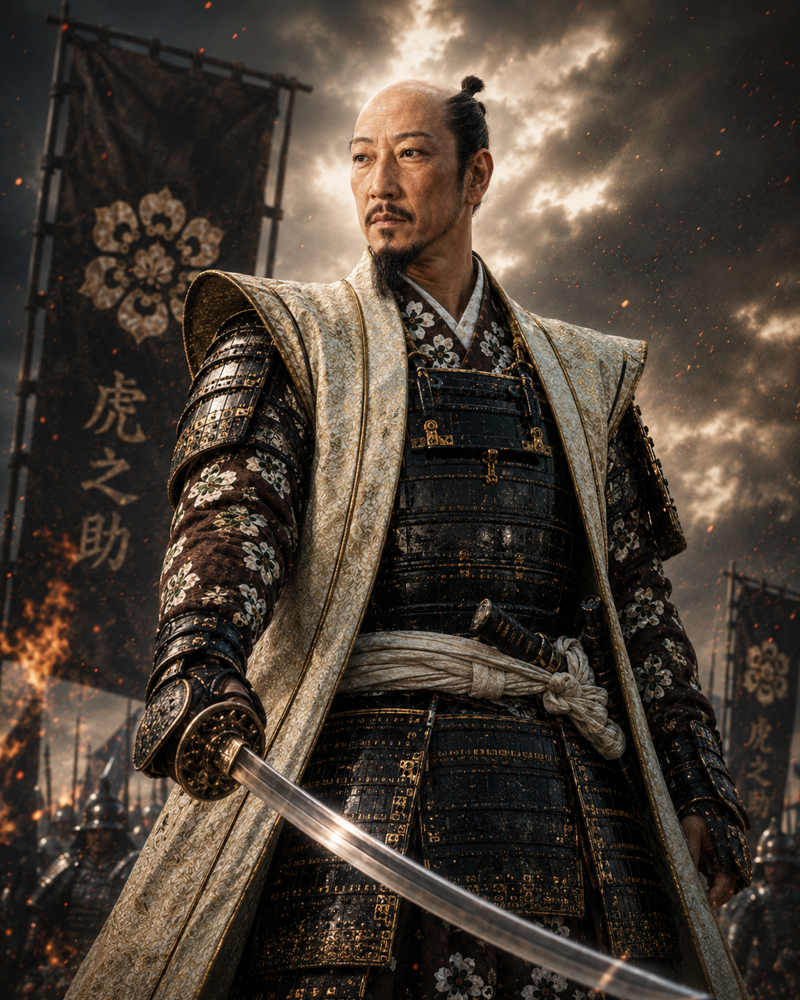
가토 기요마사
Kato Kiyomasa 일본 무장 · 호랑이 사냥꾼 · JAPAN'S TIGER HUNTER임진왜란 당시 선봉에서 조선 최북단까지 진격한 맹장. 용맹함과 잔혹함을 동시에 지녔으며, 호랑이를 사냥했다는 일화로 '호랑이 사냥꾼'이라 불렸다. EASTWAR에서는 압도적인 돌파력으로 전선을 밀어붙이는 공격형 장수다.
A fearless commander who pushed Japanese forces all the way to Korea's northernmost frontier during the Imjin War. Known for both his bravery and brutality, he earned the nickname "Tiger Hunter" from a legendary hunting tale. In EASTWAR, he's an aggressive breakthrough specialist who crashes through enemy lines.
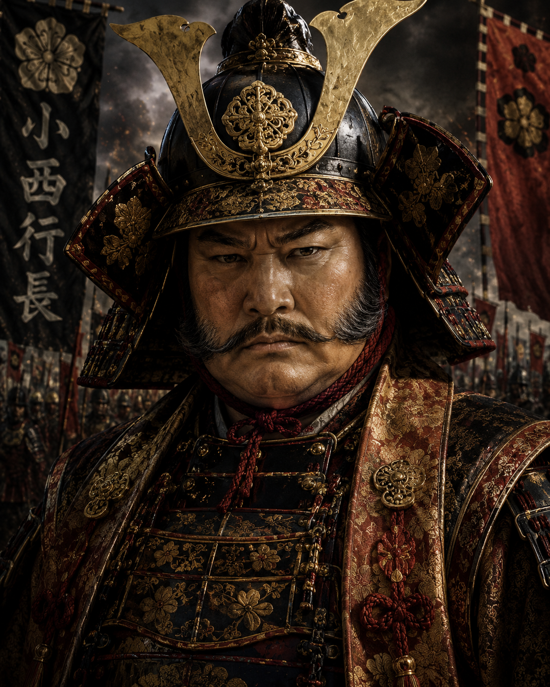
고니시 유키나가
Konishi Yukinaga 일본 무장 · 선봉장 · JAPAN VANGUARD COMMANDER임진왜란 당시 일본군 선봉을 맡아 부산에 첫 상륙한 장수. 상인 가문 출신으로 전투뿐 아니라 협상과 외교에도 능해, 전쟁 후반 강화 교섭의 중심에 섰다. EASTWAR에서는 빠른 기동으로 전황을 여는 개전 특화 장수다.
The commander who led Japan's vanguard and made the first landing at Busan during the Imjin War. Born into a merchant family, he was as skilled in negotiation as in battle, becoming central to the late-war peace talks. In EASTWAR, he's an opening-move specialist built for rapid early advances.

구로다 나가마사
Kuroda Nagamasa 일본 무장 · 기병 지휘관 · JAPAN CAVALRY COMMANDER임진왜란 당시 황해도까지 진격하며 전선을 넓힌 일본의 젊은 맹장. 뛰어난 전략가였던 아버지 구로다 간베에의 지략을 물려받아 전장에서도 냉철한 판단력을 보였다. EASTWAR에서는 기동성과 판단력을 겸비한 균형형 야전 장수다.
A young, formidable Japanese commander who expanded the front line all the way to Hwanghae Province during the Imjin War. Inheriting the strategic mind of his father, Kuroda Kanbe'e, he showed sharp battlefield judgment beyond his years. In EASTWAR, he's a balanced field commander combining mobility with tactical sense.
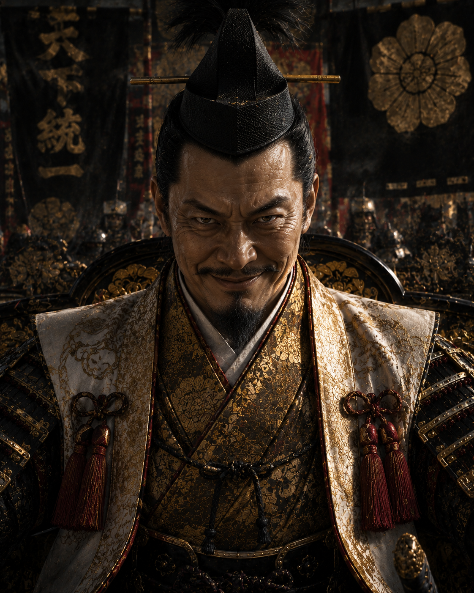
도요토미 히데요시
Toyotomi Hideyoshi 일본 최고 권력자 · 천하통일 · UNIFIER OF JAPAN미천한 출신에서 일본 전국을 통일한 최고 권력자. '천하통일'이라는 야망은 결국 조선 침공으로 이어져 동아시아 전체를 전쟁의 소용돌이로 몰아넣었다. EASTWAR에서는 일본 세력 전체를 지휘하는 정점의 군주로 등장한다.
A man of humble birth who rose to unify all of Japan under his rule. His ambition for "unification under heaven" ultimately drove the invasion of Korea, pulling all of East Asia into war. In EASTWAR, he stands at the very top of the Japanese faction as its supreme ruler.
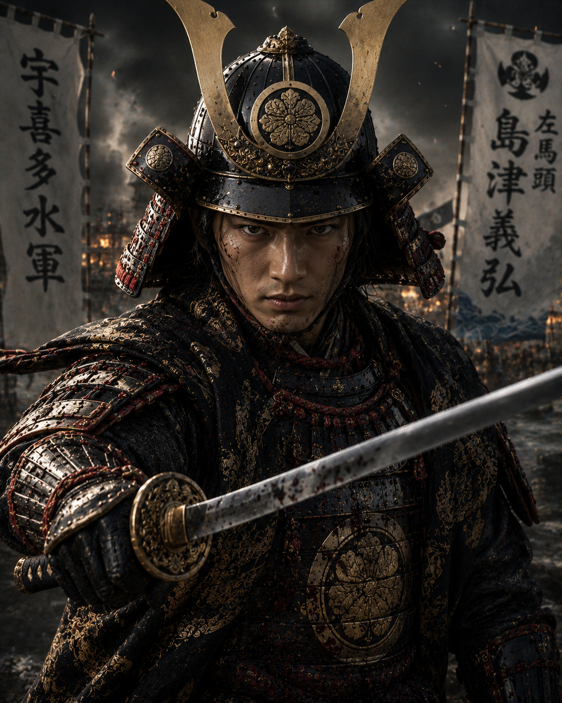
시마즈 요시히로
Shimazu Yoshihiro 사츠마 수군 대장 · 귀신 시마즈 · SATSUMA NAVAL COMMANDER'귀신 시마즈'라는 별명으로 조선과 명나라 군대를 떨게 한 사츠마의 맹장. 노량해전을 비롯한 격전에서 소수 병력으로 대군을 상대하며 이름을 떨쳤다. EASTWAR에서는 열세를 뒤집는 데 특화된 결사항전형 장수다.
Known as "Shimazu the Demon," he struck fear into Korean and Ming forces alike as Satsuma's fiercest commander. He built his legend by holding off much larger armies with a fraction of the men, including at the Battle of Noryang. In EASTWAR, he's a last-stand specialist who thrives when the odds are against him.
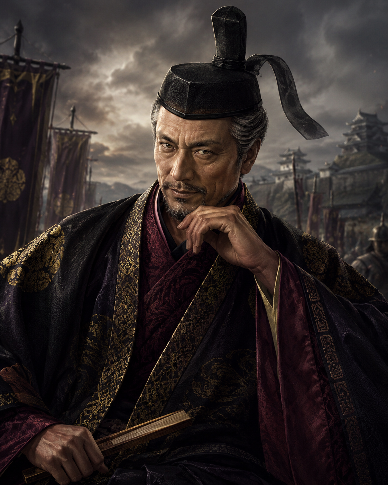
혼다 마사노부
Honda Masanobu 도쿠가와 참모 · 책략가 · TOKUGAWA STRATEGIST도쿠가와 가문의 두뇌로 불린 책사. 전장보다 정치와 책략으로 승부를 결정짓는 인물로, 부채 하나로 판을 읽는 여유를 지녔다. EASTWAR에서는 내정과 전략 효율을 끌어올리는 참모형 장수로 등장한다.
Known as the brains of the Tokugawa clan, he won battles through politics and strategy more often than the sword — a man calm enough to read the entire board with nothing but a folding fan in hand. In EASTWAR, he's a strategist-type hero who boosts internal affairs and strategic efficiency.
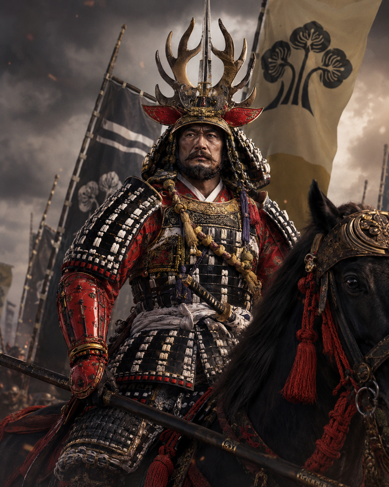
혼다 타다카츠
Honda Tadakatsu 도쿠가와 사천왕 · 전장의 사슴뿔 · TOKUGAWA'S UNDEFEATED SPEARMAN평생 수십 번의 전투를 치르고도 단 한 번도 큰 상처를 입지 않았다는 전설의 무장. 사슴뿔 투구를 쓰고 창을 든 그의 모습은 도쿠가와 사천왕 중에서도 최강으로 꼽힌다. EASTWAR에서는 근접 전투에서 압도적인 생존력을 자랑하는 돌격형 장수다.
A legendary warrior said to have fought dozens of battles across his life without ever suffering a serious wound. With his antlered helmet and spear, he's regarded as the strongest of the Tokugawa Four Heavenly Kings. In EASTWAR, he's a melee juggernaut famed for near-unmatched survivability in close combat.
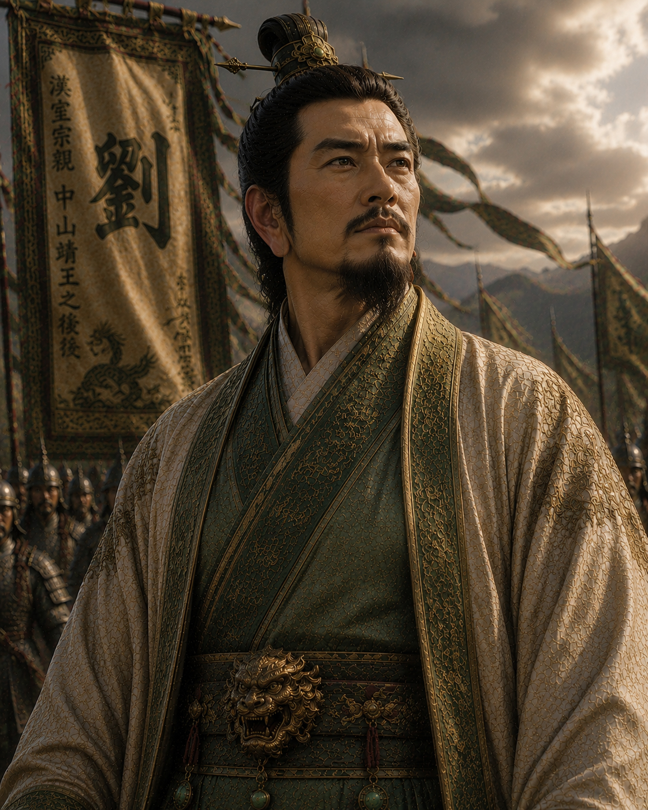
유비
Liu Bei 촉 세력 군주 · 한실 종친 · SHU FOUNDING RULER한나라 황실의 후예임을 내세우며 인의로 사람을 모은 촉의 시조. 뛰어난 무력보다 사람의 마음을 얻는 능력으로 천하를 도모했다. EASTWAR에서는 인재를 끌어모으는 내정·통솔형 군주로 등장한다.
The founder of Shu, who rallied followers around his claim as a descendant of the Han imperial house and his reputation for benevolence. He pursued the realm not through raw military might, but through his gift for winning people's hearts. In EASTWAR, he's a leadership-type ruler who excels at drawing talent to his side.
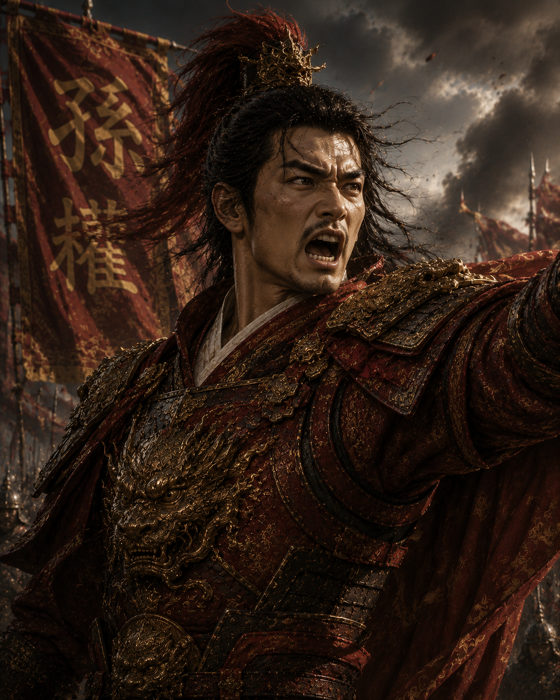
손책
Sun Ce 오 세력 창업 군주 · 소패왕 · WU'S YOUNG CONQUEROR약관의 나이에 강동을 평정하며 오나라의 기틀을 세운 정복자. 뛰어난 무용과 과감한 결단력으로 '소패왕'이라 불리며 짧지만 강렬한 궤적을 남겼다. EASTWAR에서는 폭발적인 초반 공세를 이끄는 속공형 장수다.
A conqueror who pacified the Jiangdong region while still in his twenties, laying the foundation for the kingdom of Wu. Known as the "Little Conqueror" for his martial skill and bold decisiveness, he burned bright in a short but explosive career. In EASTWAR, he's a rush-type commander built for explosive early aggression.
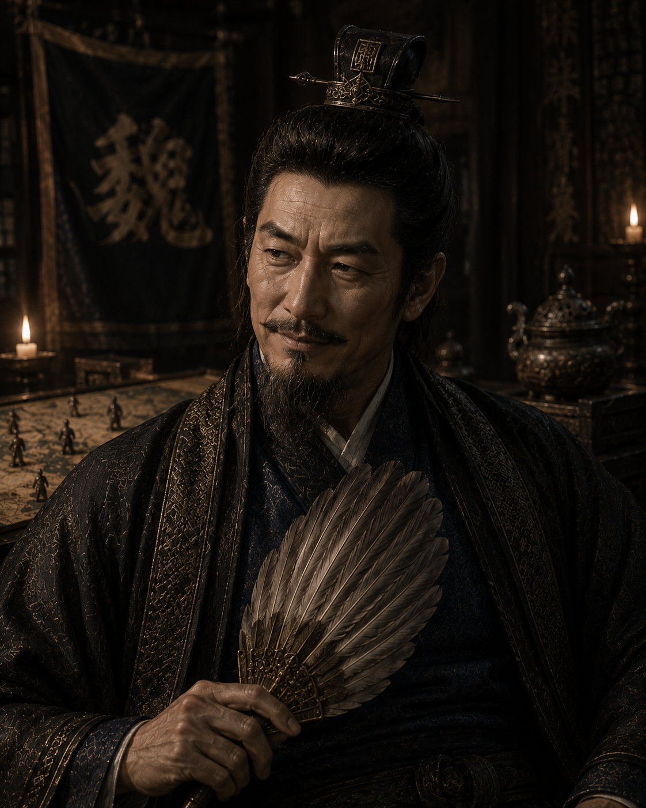
순욱
Xun Yu 위 세력 참모 · 왕좌지재 · WEI'S CHIEF STRATEGIST조조가 '나의 장자방'이라 불렀던 위나라 최고의 책사. 인재를 추천하고 전략을 세우며 조조의 천하 경영을 뒤에서 설계한 두뇌였다. EASTWAR에서는 내정과 인재 등용에 특화된 참모형 장수로 등장한다.
The brilliant strategist Cao Cao called "my Zhang Liang" — the mastermind behind Wei's rise. He recommended talent and shaped strategy, quietly engineering Cao Cao's rule over the realm from behind the scenes. In EASTWAR, he's a strategist hero specialized in domestic administration and talent recruitment.
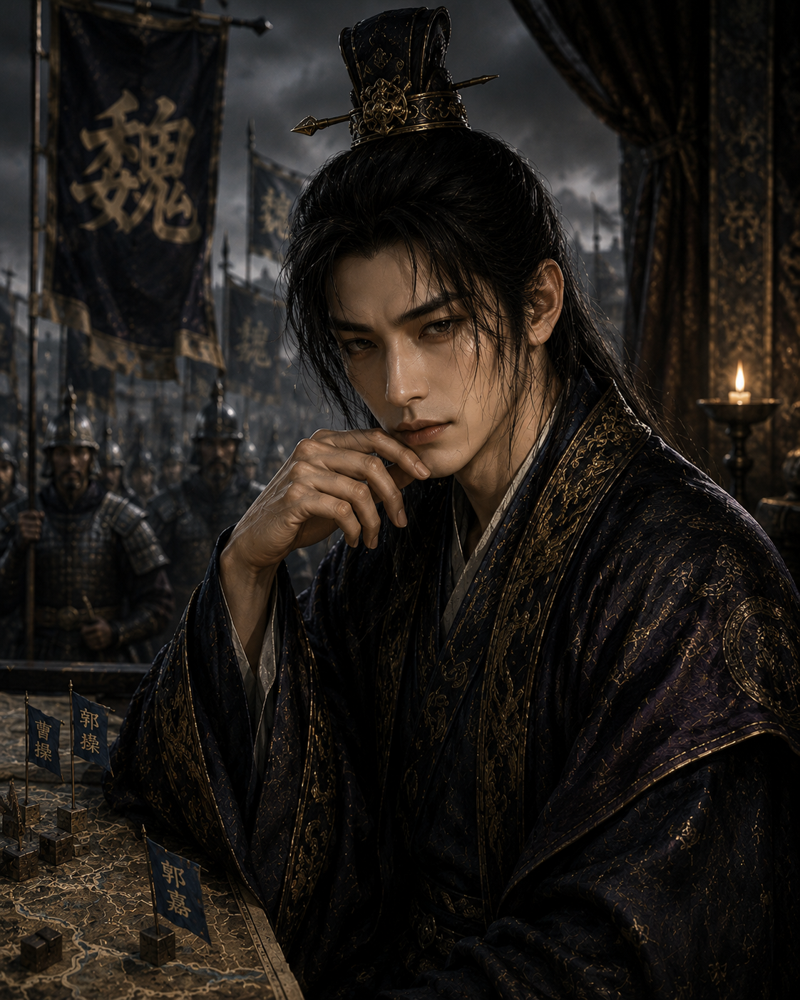
곽가
Guo Jia 위 세력 참모 · 귀재 곽봉효 · WEI'S BRILLIANT TACTICIAN조조가 가장 아꼈던 천재 책사. 젊은 나이에 세상을 떠났지만 남긴 계책마다 전황을 뒤바꿔 '귀재'라 불렸다. EASTWAR에서는 예측 불가능한 기책으로 전투의 흐름을 바꾸는 지략형 장수다.
The brilliant strategist Cao Cao valued above all others. Though he died young, nearly every scheme he devised turned the tide of battle, earning him the nickname "the genius." In EASTWAR, he's a tactician hero who shifts the flow of battle with unpredictable, game-changing schemes.
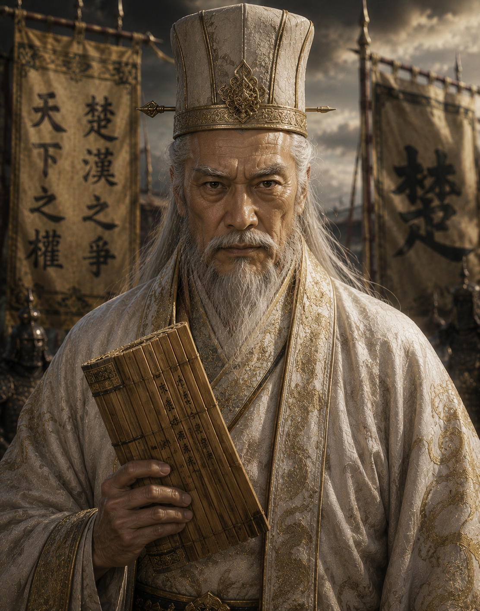
범증
Fan Zeng 초 세력 참모 · 아부 · CHU'S ELDER STRATEGIST항우를 왕으로 만들고자 평생을 바친 초나라의 노회한 책사. 초한쟁패의 한복판에서 천하의 향방을 좌우할 계책을 세웠으나, 끝내 그 뜻을 다 펼치지 못했다. EASTWAR에서는 깊은 통찰로 국가 전략을 설계하는 원로 참모형 장수다.
An aging strategist of Chu who devoted his life to making Xiang Yu ruler of all under heaven. In the thick of the Chu-Han Contention, he devised schemes meant to decide the fate of the realm — though his vision was never fully realized. In EASTWAR, he's a veteran strategist who shapes grand strategy with deep insight.
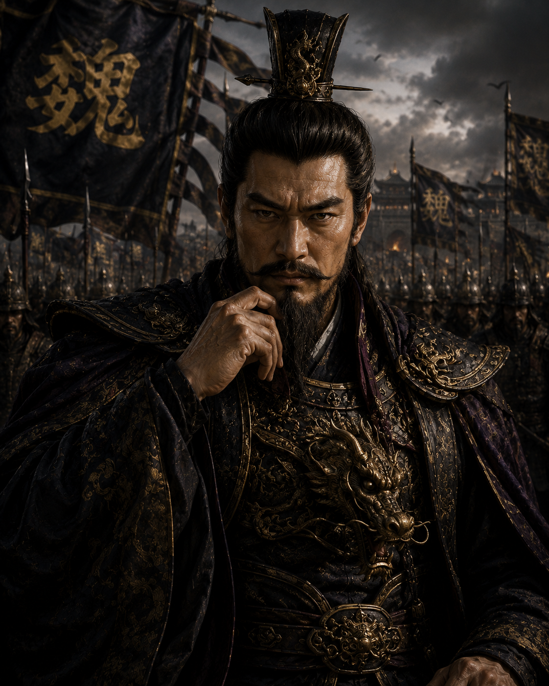
조조
Cao Cao 위 세력 군주 · 난세의 간웅 · WEI'S RULING HERO난세를 평정하며 위나라의 기틀을 세운 절대 군주. '치세의 능신, 난세의 간웅'이라 불릴 만큼 냉철한 판단력과 압도적인 야망을 지닌 인물이다. EASTWAR에서는 위 세력 전체를 지휘하는 정점의 군주로 등장한다.
The formidable ruler who tamed a chaotic age and built the foundations of Wei. Called both a capable statesman in peace and a cunning hero in chaos, he combined cold judgment with overwhelming ambition. In EASTWAR, he stands at the very top of the Wei faction as its supreme ruler.
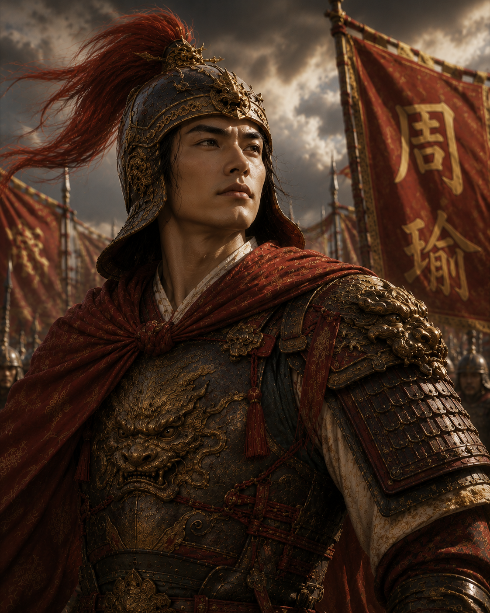
주유
Zhou Yu 오 세력 대도독 · 적벽의 지략가 · WU'S GRAND COMMANDER적벽대전에서 화공으로 조조의 대군을 격파한 오나라의 젊은 대도독. 뛰어난 용모와 지략을 겸비해 '미주랑'이라 불렸으며, 오나라 수군의 전성기를 이끌었다. EASTWAR에서는 수전에서 압도적인 위력을 발휘하는 해상 전략형 장수다.
Wu's young grand commander, who crushed Cao Cao's massive army with a fire attack at the Battle of Red Cliffs. Renowned for both his striking looks and his brilliant strategy, he was known as the "Handsome Young Marshal" who led Wu's navy to its finest hour. In EASTWAR, he's a naval strategist who dominates any battle fought on water.

하후돈
Xiahou Dun 위 세력 맹장 · 애꾸눈 맹장 · WEI'S ONE-EYED WARRIOR전투 중 한쪽 눈을 잃고도 전장을 떠나지 않은 위나라의 용맹한 맹장. 조조의 최측근이자 종형제로서, 위나라 창업 전 과정을 함께한 충신이다. EASTWAR에서는 부상에도 흔들리지 않는 강인한 근접 전투형 장수로 등장한다.
A fearless Wei general who lost an eye in battle yet never left the field. A close kinsman and confidant of Cao Cao, he stood by him through every stage of Wei's founding. In EASTWAR, he's a resilient melee fighter who refuses to fall even after taking heavy damage.
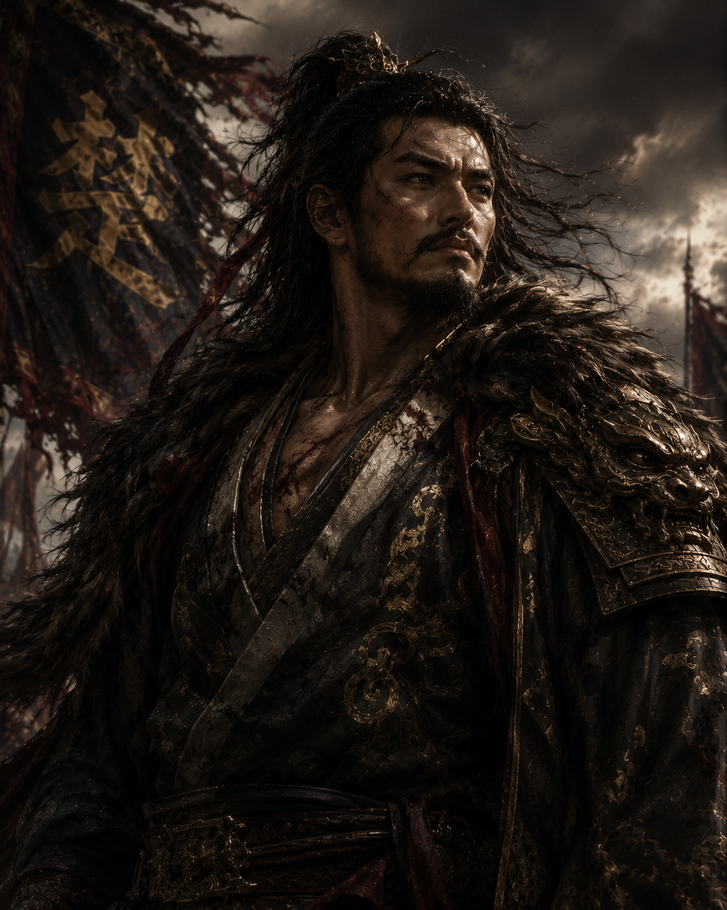
항우
Xiang Yu 초 세력 패왕 · 서초패왕 · HEGEMON-KING OF WESTERN CHU힘으로 산을 뽑았다는 전설이 전해지는 초한쟁패 최강의 전사. 압도적인 무력으로 진나라를 무너뜨렸지만, 결국 유방과의 마지막 싸움에서 패배해 비극적으로 생을 마감했다. EASTWAR에서는 단신으로 전황을 뒤집는 최강의 무력형 장수다.
The strongest warrior of the Chu-Han Contention, said in legend to have had the strength to uproot mountains. His overwhelming might toppled the Qin dynasty, but he was ultimately defeated by Liu Bang in their final struggle and met a tragic end. In EASTWAR, he's the ultimate powerhouse hero, capable of turning a battle single-handedly.
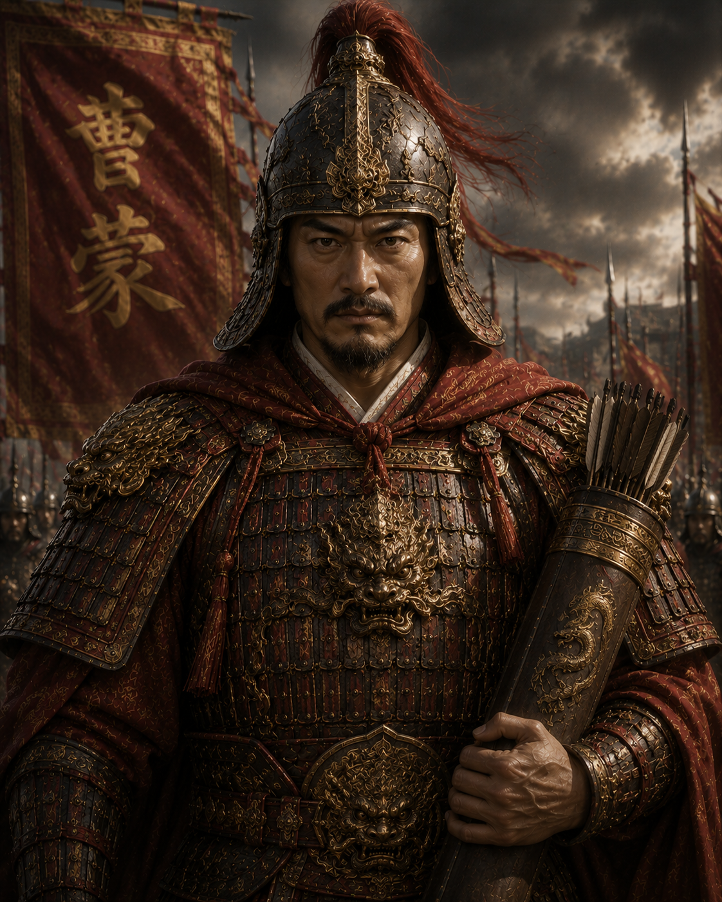
여몽
Lu Meng 오 세력 명장 · 백의도강 · WU'S CUNNING GENERAL본래 무식한 무장이었으나 학문에 매진해 지략까지 갖춘 오나라의 명장으로 거듭났다. 백의종군 전략으로 형주를 기습해 관우를 사로잡은 전략으로 이름을 남겼다. EASTWAR에서는 기습과 은밀한 작전에 특화된 전략형 장수다.
Once known only as a rough soldier, he transformed himself through relentless study into one of Wu's most cunning generals. He's remembered for the disguised river assault that seized Jingzhou and captured the legendary Guan Yu. In EASTWAR, he's a strategist specialized in stealth operations and surprise attacks.
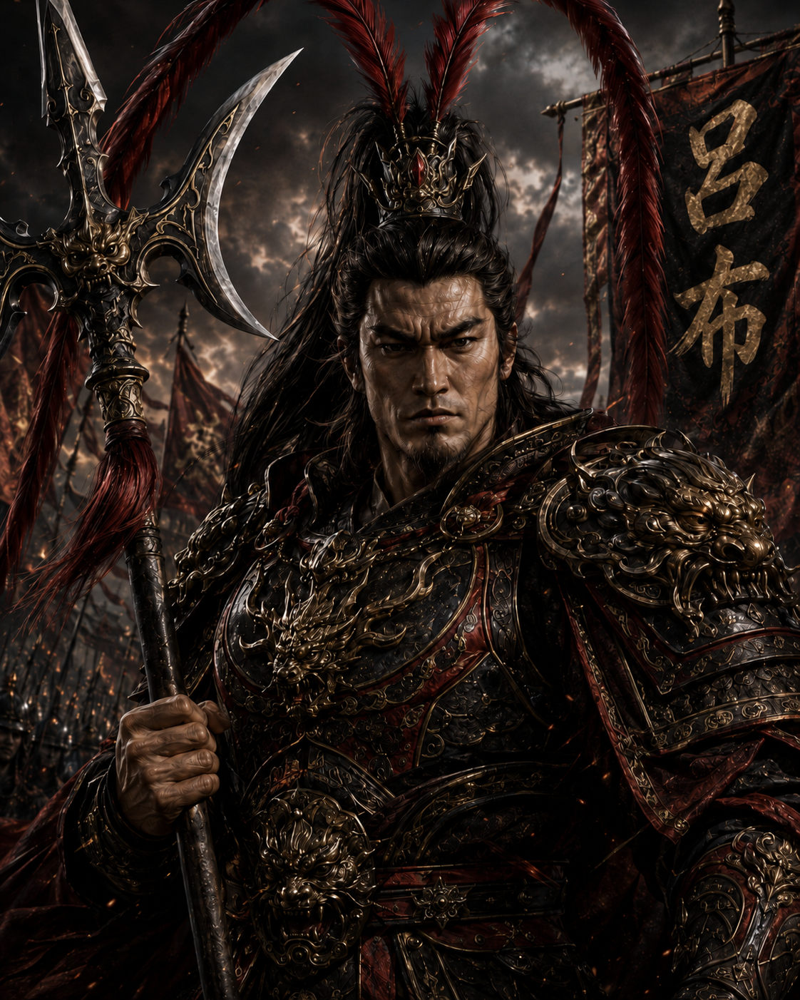
여포
Lu Bu 최강의 무장 · 인중여포 · THE STRONGEST WARRIOR'사람 중에는 여포요, 말 중에는 적토마'라는 말이 나올 만큼 삼국지 최강으로 꼽히는 무장. 방천화극을 휘두르며 어떤 군세도 홀로 무너뜨릴 수 있는 압도적 무력을 지녔다. EASTWAR에서는 소속을 가리지 않고 등장 자체로 전황을 뒤엎는 최강의 단일 전투 유닛이다.
Regarded as the mightiest warrior of the Three Kingdoms era — as the saying goes, "Among men, Lu Bu; among horses, Red Hare." Wielding his signature halberd, he possessed the raw power to break an entire army by himself. In EASTWAR, he's the single strongest combat unit in the game, capable of turning any battle simply by stepping onto the field.
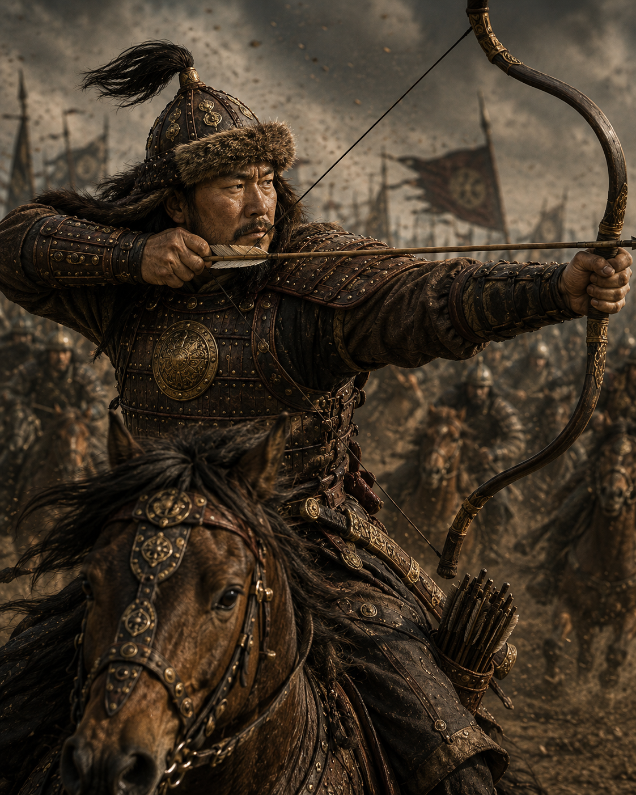
수부타이
Subutai 몽골 세력 명장 · 정복의 설계자 · MONGOL GRAND GENERAL칭기즈칸을 도와 몽골제국을 유라시아 최대의 제국으로 키운 최고의 명장. 유목민 출신임에도 뛰어난 전략과 전술로 역사상 가장 넓은 영토를 정복하는 데 결정적인 역할을 했다. EASTWAR에서는 광범위한 기동전을 지휘하는 최상급 야전 사령관이다.
The greatest general who helped Genghis Khan build the Mongol Empire into the largest land empire in history. Despite his nomadic origins, his brilliant strategy and tactics were decisive in the empire's unprecedented conquests. In EASTWAR, he's a top-tier field commander who directs sweeping campaigns of mobile warfare.
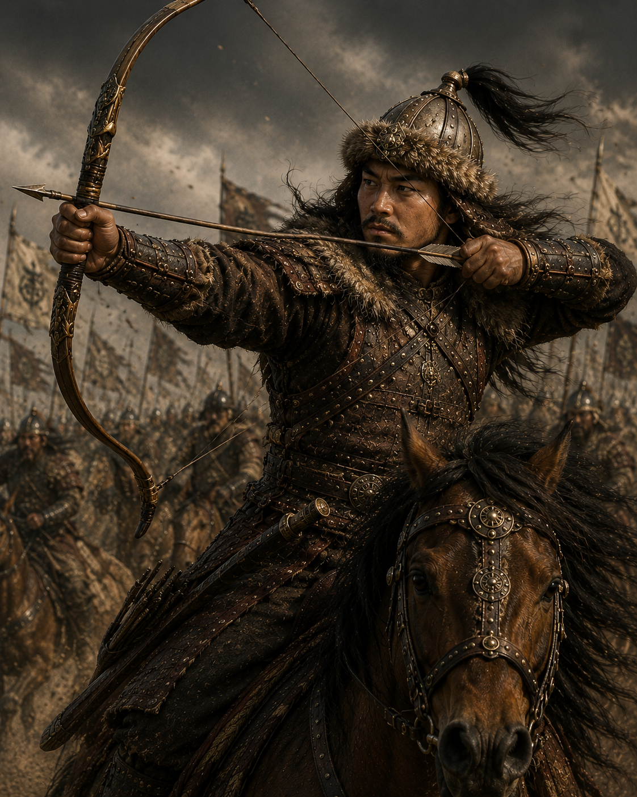
제베
Jebe 몽골 세력 궁기병 · 화살 · MONGOL ARROW COMMANDER원래는 칭기즈칸의 적이었으나 투항 후 가장 신뢰받는 장수가 된 몽골의 명궁수. 이름 자체가 '화살'을 뜻할 만큼 뛰어난 궁술과 기동력으로 수많은 원정에서 활약했다. EASTWAR에서는 압도적인 사거리와 기동성을 갖춘 궁기병 특화 장수다.
Once an enemy of Genghis Khan, he surrendered and rose to become one of his most trusted commanders. His name literally means "arrow," a fitting title for the archer whose skill and speed carried him through countless campaigns. In EASTWAR, he's a horse-archer specialist with unmatched range and mobility.
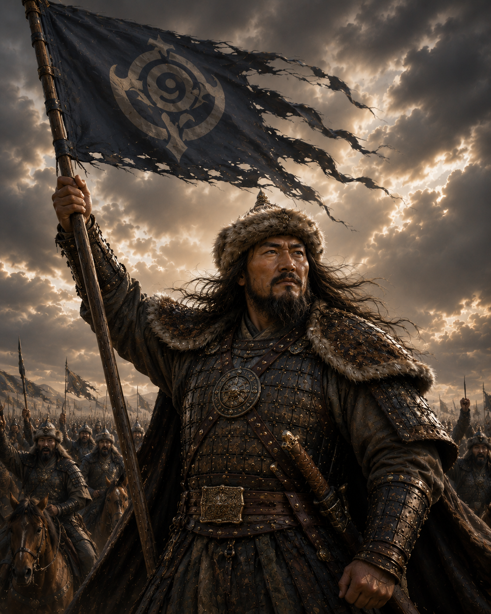
징기스칸
Genghis Khan 몽골 세력 대칸 · 세계 정복자 · FOUNDER OF THE MONGOL EMPIRE흩어진 유목 부족을 하나로 통합해 인류 역사상 가장 넓은 제국을 세운 정복자. 압도적인 카리스마와 전략으로 동서양을 아우르는 대제국의 시대를 열었다. EASTWAR에서는 몽골 세력 전체를 지휘하는 최고 정점의 군주로 등장한다.
A conqueror who united scattered nomadic tribes into the largest contiguous empire in human history. With overwhelming charisma and strategic vision, he ushered in an age of empire spanning both East and West. In EASTWAR, he stands at the very top of the Mongol faction as its supreme ruler.

다케다 신겐
Takeda Shingen 풍림화산(風林火山) · LORD OF KAI바람처럼 빠르고, 숲처럼 고요하며, 불처럼 맹렬하고, 산처럼 움직이지 않는다. 가이의 호랑이. EASTWAR에서 일본 진영을 이끄는 최강의 전략가.
Swift as the wind, silent as the forest, fierce as fire, immovable as the mountain. The Tiger of Kai. In EASTWAR, he commands the Japanese forces with unmatched strategic brilliance.

척준경
Cheok Jun-gyeong 고려 최강의 무장 · WARRIOR OF GORYEO고려 역사상 가장 강력한 무장. 전장에서 적을 홀로 섬멸한 살아있는 전설. EASTWAR 한반도 진영의 최강 전투력.
The most fearsome warrior in Goryeo's history. A living legend who annihilated enemies single-handedly. In EASTWAR, he is the ultimate combat force of the Korean Peninsula.

우에스기 겐신
Uesugi Kenshin 군신(軍神) · GOD OF WAR전쟁의 신, 비사문천의 화신. 의(義)를 위해 싸운 월후의 용. 다케다 신겐의 영원한 라이벌. EASTWAR에서 일본 진영의 또 다른 축을 담당한다.
The God of War incarnate. The Dragon of Echigo who fought for justice, not conquest. Eternal rival of Takeda Shingen. In EASTWAR, he anchors the other wing of the Japanese forces.

제갈량
Zhuge Liang 와룡(臥龍) · THE SLEEPING DRAGON천하삼분지계를 설계한 최고의 책사. 전장보다 전략으로 천하를 움직인 와룡. EASTWAR 중원 진영의 두뇌.
The supreme strategist who designed the Three Kingdoms division. He moved the world not by the sword, but by the mind. In EASTWAR, he is the supreme intellect of the Central Plains.

광개토대왕
Gwanggaeto the Great 천하대왕(天下大王) · KING OF ALL UNDER HEAVEN고구려의 영토를 사상 최대로 확장한 정복왕. 동아시아 최강의 군주. EASTWAR에서 한반도를 넘어 대륙을 지배하는 왕 중의 왕.
The conquering king who expanded Goguryeo to its greatest extent. The mightiest ruler in East Asia. In EASTWAR, he reigns as the king of kings — dominating the continent beyond the Korean Peninsula.